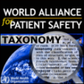

")
")
Organización Mundial de la Salud, Ontología sobre Seguridad del Paciente
ICPS (International Classification for Patience Safety) es un proyecto de la Organización Mundial de la Salud (OMS), en el contexto de la alianza World Alliance for Patient Safety. El objetivo global del proyecto es el de desarrollar una clasificación internacional sobre seguridad del paciente que pueda ser utilizada por todos los agentes mundiales relacionados con este sub-área de la Sanidad (gobiernos, hospitales, médicos, etc.) en diversos tipos de aplicaciones (informes sobre eventos relacionados con seguridad del paciente, búsquedas de artículos científicos, propuestas de mejoras de protocolos, etc.).
Rol de la UPM en ICPS
El proyecto se divide en un conjunto de sub-objetivos, o work threads, de los cuales la UPM está centrado en el número 4, denominado Formalism and Knowledge Engineering.
Participantes
Las personas involucradas en el desarrollo del proyecto ICPS son:
Ofertas de trabajo
Actualmente, no hay ninguna oferta de trabajo o becas disponibleas para este proyecto. Para ofertas en otros proyectos o áreas de investigación, visite la sección ofertas de trabajo.No obstante, puede contactar con Óscar Corcho para comprobar si hay posibles ofertas en un futuro cercano.

Created under Creative Commons License - 2015 OEG.